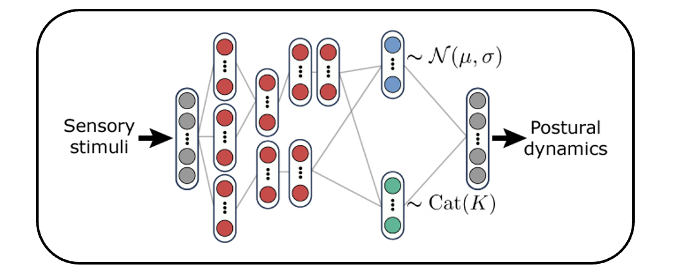

The primary output of the nervous system is movement and behavior. While recent advances have democratized pose tracking during complex behavior, kinematic trajectories alone provide only indirect access to the underlying control processes. Here we present MIMIC-MJX, a framework for learning biologically-plausible neural control policies from kinematics. MIMIC-MJX models the generative process of motor control by training neural controllers that learn to actuate biomechanically-realistic body models in physics simulation to reproduce real kinematic trajectories. We demonstrate that our implementation is accurate, fast, data-efficient, and generalizable to diverse animal body models. Policies trained with MIMIC-MJX can be utilized to both analyze neural control strategies and simulate behavioral experiments, illustrating its potential as an integrative modeling framework for neuroscience.

Abstract Deep Imitation Learning Idea (curtesy of Talmo's VNL slides)
We believe that inverse kinematics imitation injects the basis layer alignment with biology to support more abstratc expolration of representations of the brain in artificial agents. Thus, we aim to create pipelines with architectures and learning algorithms that are capable of generalizing and continual learning of low-level skills that are transferable for multiple higher-level task-driven goals, trying to get closer to what the "real brain" is capable of doing.